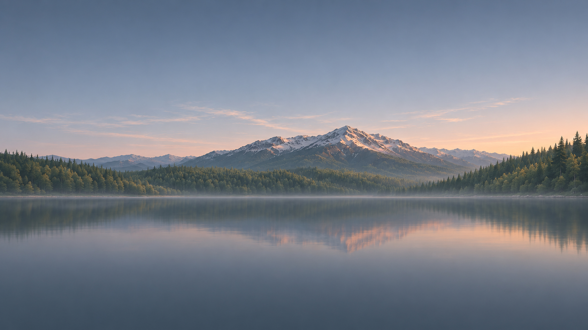
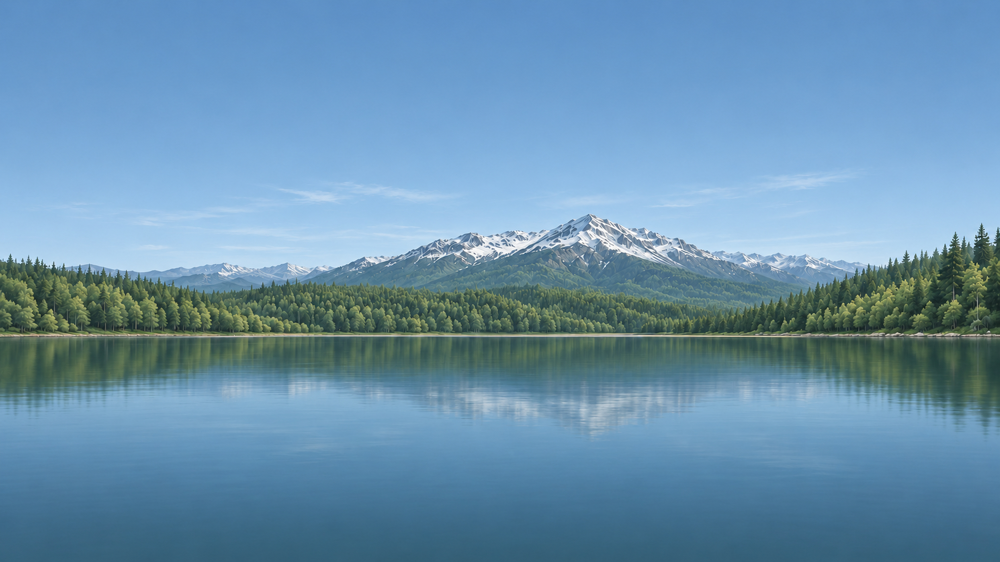
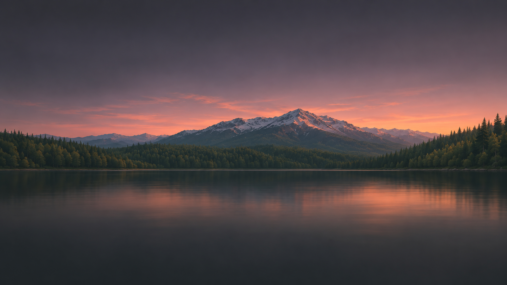
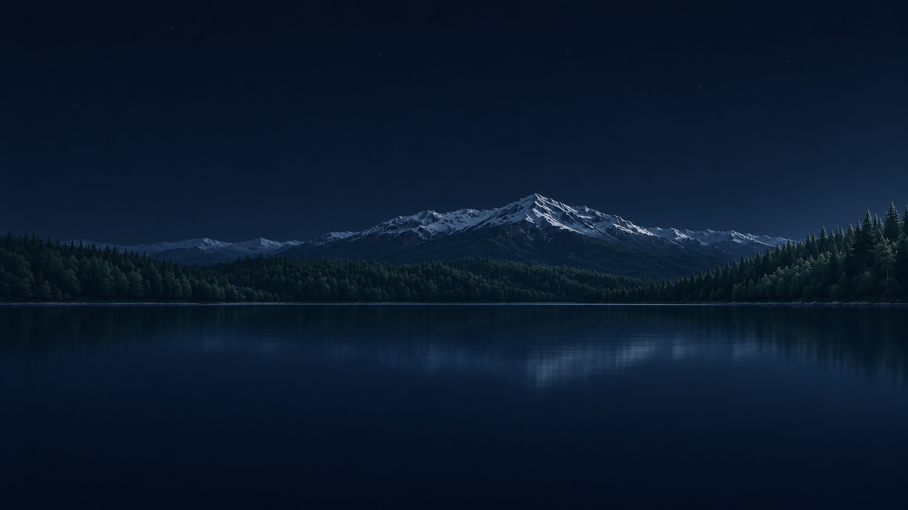
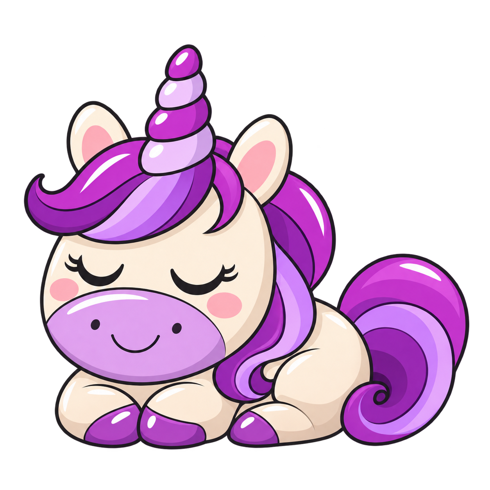
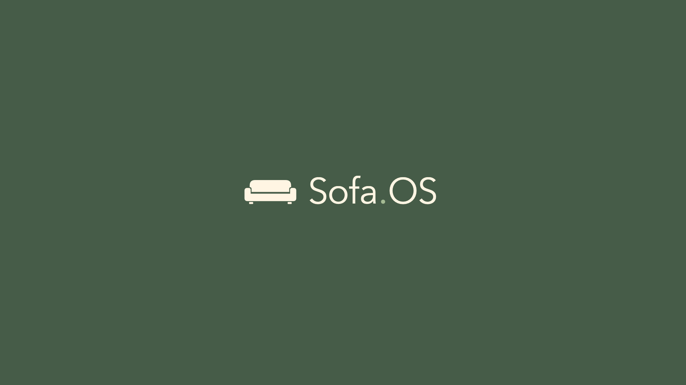

Sofa.OS / the supporting assets
The selected Low profile mark, a mountain-sunset landscape and a gentle purple unicorn. Asset presentation only; Kids Mode labels below remain editable UI text.
Wordmark
Transparent SVG and PNG in charcoal, sage and ivory. SVG lettering uses Avenir Next with fallbacks; PNG is fixed.
Mountain lake / four times of day

Morning · 3840 × 2160 · PNG / JPEG
Midday · 3840 × 2160 · PNG / JPEG
Evening · 3840 × 2160 · PNG / JPEG
Night · 3840 × 2160 · PNG / JPEGFour exact 3840 × 2160 exports, upscaled from 1672 × 941 generated sources. Originals preserved; these are not native 4K generations.
Kids Mode / purple unicorn
All done for now
See you next time.

Two transparent cartoon character assets (v2), with bold outlines, glossy eyes and purple accents. Card backgrounds and copy are presentation examples.
Launch screen

1920 × 1080 PNG and scalable SVG.